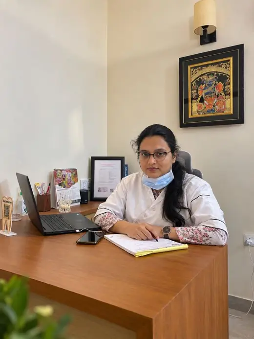

Best Dental Clinic in VrindavanGentle Hand. Honest Care
Professional, patient-centered dental care in Omaxe Eternity, Vrindavan, led by Dr. Pragati Goyal, BDS, MDS in Prosthodontics.
Message or call to book. We reply during clinic hours.
Thoughtful care, rooted in our community
Maitri Dental Care welcomes families from Omaxe Eternity, Sunrakh Bangar, Chhatikara Road, Mathura and nearby areas with gentle, patient-focused dental care.
A trusted dental clinic in Vrindavan for the whole family
Looking for a dentist near Omaxe Eternity? Maitri Dental Care is a modern dental clinic in Omaxe Eternity, Vrindavan, serving patients from Vrindavan, Sunrakh Bangar, Chhatikara Road, Mathura and nearby areas. We believe good dentistry starts with listening: explaining your options in plain language, treating only what is needed, and keeping you comfortable throughout.
- Gentle, ethical care
- Patient-centered treatment
- Family-friendly, from children to grandparents
- A senior-friendly approach

Meet Dr. Pragati Goyal — Experienced Dental Care in Vrindavan
Dr. Pragati Goyal provides patient-focused dental care with a focus on prosthodontics, restorative dentistry and personalized treatment planning. Her approach is centered on understanding each patient’s concerns, explaining suitable options clearly and planning care around individual needs.
Education & professional experience
- Qualifications: BDS, MDS in Prosthodontics
- Education: Adani Institute of Higher Education & Research, Wardha
- Professional experience: Clove Dental, Delhi; Ayushmann Hospital, Delhi
- Current practice: Maitri Dental Care, Omaxe Eternity Society, Vrindavan
Our dental treatments in Vrindavan
From routine check-ups to complete smile rehabilitation, all under one roof. Your dentist will advise what suits you after an examination.
Not sure which treatment you need? Tell us your concern and the dentist will guide you after an examination.
Book your dental visit in three steps
- Message or callTell us what you need on WhatsApp, or call during clinic hours.
- Pick a convenient timeWe will confirm a slot that works for you.
- Visit the clinicMeet Dr. Goyal at Circle Market, Omaxe Eternity.
Book an appointment at our dental clinic in Vrindavan
Message or call us and we will help you find a convenient time.
Care That Understands Every Generation.
Older patients often need more time, clearer explanations and an easier visit. We make room for all three.
- Comfort first: unhurried appointments and gentle handling
- Patience: questions are always welcome, as often as you need
- Accessibility: facilities for easier access, listed below
- Clear information: treatment options explained in simple words
- Respect: you decide, with all the facts in front of you
Why choose Maitri Dental Care in Vrindavan?
Accessibility
- Wheelchair-accessible entrance
- Wheelchair-accessible parking
- Wheelchair-accessible restroom
Frequently asked questions
General information only, not a diagnosis. Please visit the clinic for advice specific to you.
Visit our dental clinic in Omaxe Eternity, Vrindavan
002, Radha-3A, Ground Floor, Opposite Shiv Mandir, Circle Market, Omaxe Eternity, Sunrakh Bangar, Vrindavan, Mathura, Uttar Pradesh – 281121
Opening hours
| Monday–Saturday | 10:00 AM – 2:00 PM 4:30 PM – 8:30 PM |
| Sunday | 10:00 AM – 1:00 PM |
Phone / WhatsApp: +91 82679 97067
Email: pragatigoyal91@gmail.com